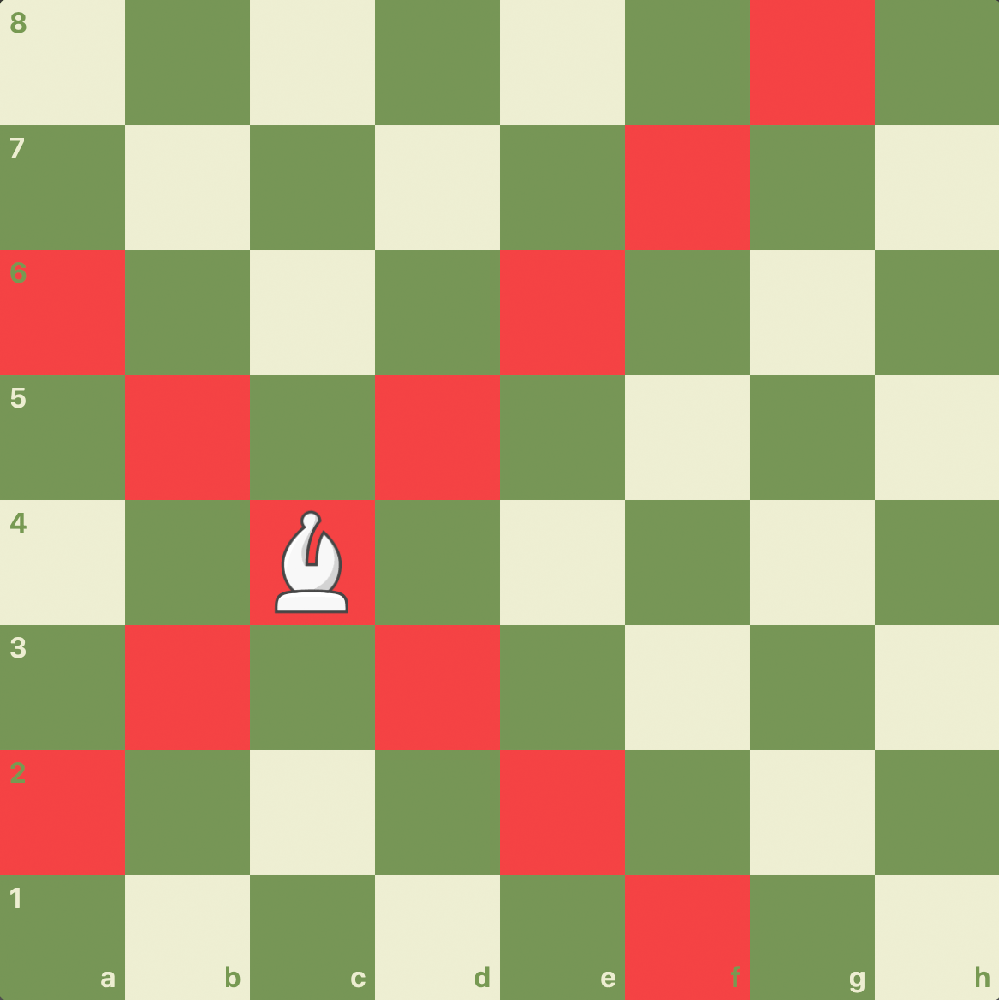
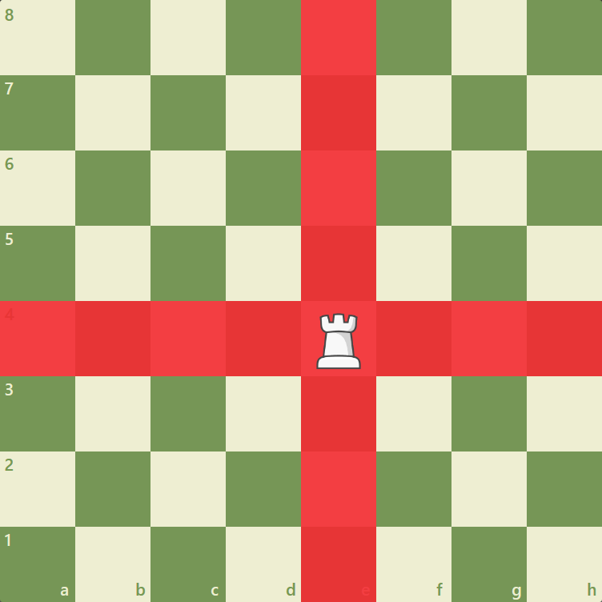
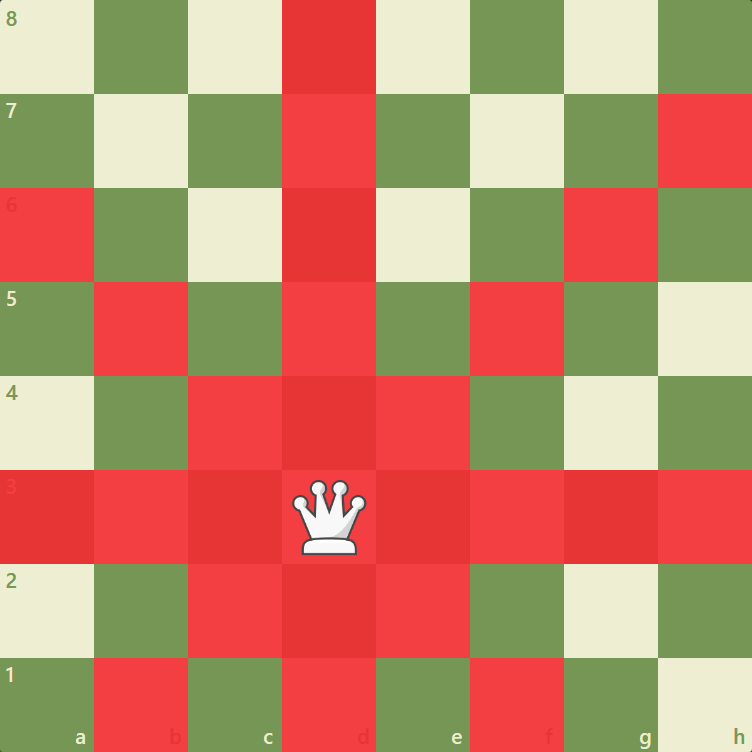
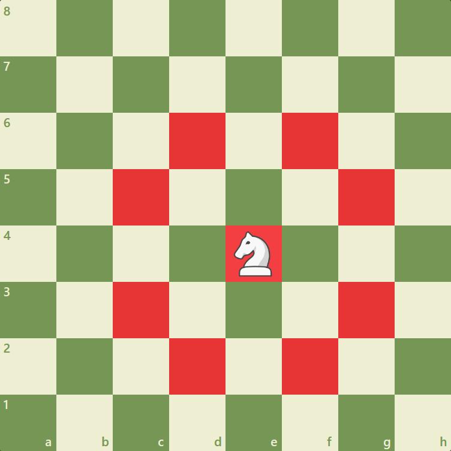
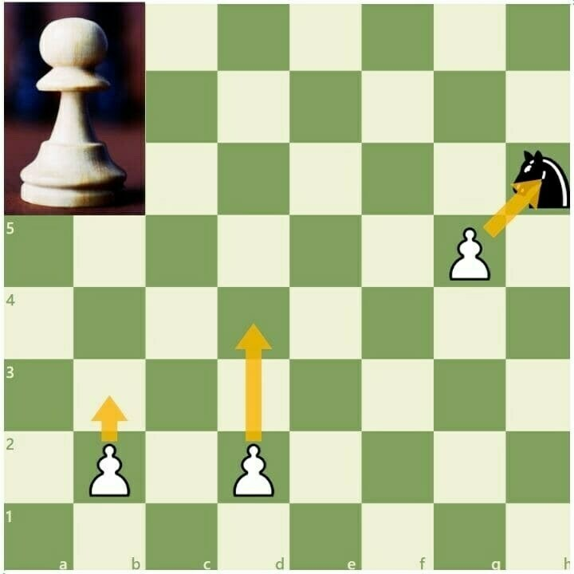
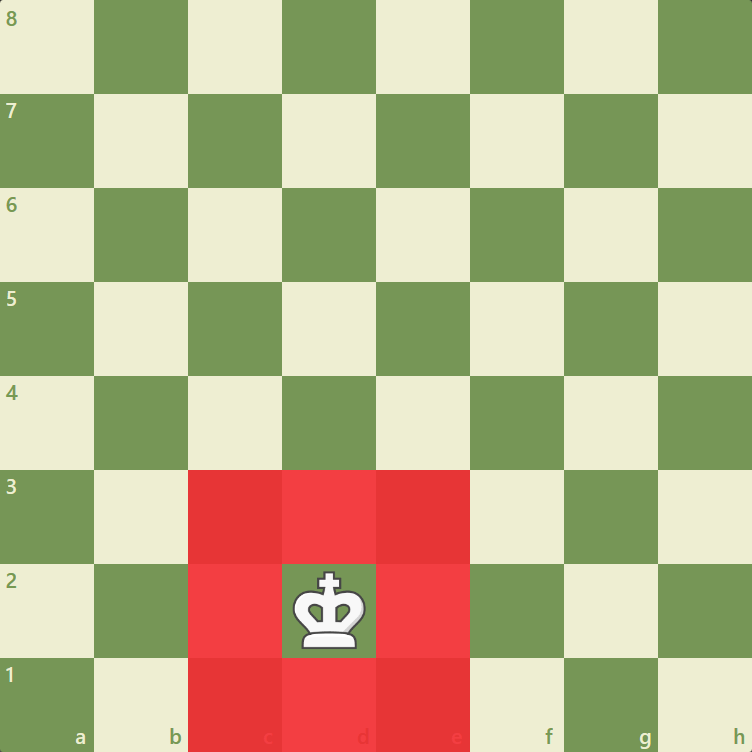

Figures and movement
1.Bishop

The bishop may move to any square along a diagonal on which it stands.
2.Rook

The rook may move to any square along the file or the rank on which it stands.
3.Queen

The queen may move to any square along the file, the rank or a diagonal on which it stands.
4.Knight

The knight may move to one of the squares nearest to that on which it stands but not on the same rank, file or diagonal.
5.Pawn

The pawn may move forward to the unoccupied square immediately in front of it on the same file, or on its first move the pawn may move or alternatively it may advance two squares along the same file provided both squares are unoccupied, or the pawn may move to a square occupied by an opponent’s piece, which is diagonally in front of it on an adjacent file, capturing that piece.
6.King

The king may move to any adjoining square e not attacked by one or more of the opponent’s pieces